Last updated: 2020-11-25
Checks: 7 0
Knit directory: sc-dynamic-eqtl/
This reproducible R Markdown analysis was created with workflowr (version 1.6.2). The Checks tab describes the reproducibility checks that were applied when the results were created. The Past versions tab lists the development history.
Great! Since the R Markdown file has been committed to the Git repository, you know the exact version of the code that produced these results.
Great job! The global environment was empty. Objects defined in the global environment can affect the analysis in your R Markdown file in unknown ways. For reproduciblity it’s best to always run the code in an empty environment.
The command set.seed(20201027) was run prior to running the code in the R Markdown file. Setting a seed ensures that any results that rely on randomness, e.g. subsampling or permutations, are reproducible.
Great job! Recording the operating system, R version, and package versions is critical for reproducibility.
Nice! There were no cached chunks for this analysis, so you can be confident that you successfully produced the results during this run.
Great job! Using relative paths to the files within your workflowr project makes it easier to run your code on other machines.
Great! You are using Git for version control. Tracking code development and connecting the code version to the results is critical for reproducibility.
The results in this page were generated with repository version 6924587. See the Past versions tab to see a history of the changes made to the R Markdown and HTML files.
Note that you need to be careful to ensure that all relevant files for the analysis have been committed to Git prior to generating the results (you can use wflow_publish or wflow_git_commit). workflowr only checks the R Markdown file, but you know if there are other scripts or data files that it depends on. Below is the status of the Git repository when the results were generated:
Ignored files:
Ignored: analysis/.Rhistory
Ignored: analysis/annotation.nb.html
Ignored: analysis/cell-deconvolution.nb.html
Ignored: analysis/cibersort-calibration.nb.html
Ignored: analysis/deconvolution-results.nb.html
Ignored: analysis/static_eqtl.nb.html
Ignored: code/.Rhistory
Ignored: data/CM/
Ignored: data/EMT/
Ignored: data/EPDC/
Ignored: data/cardiomes/
Ignored: data/cibersort/
Ignored: data/day0/
Ignored: data/day1/
Ignored: data/day11/
Ignored: data/day15/
Ignored: data/day3/
Ignored: data/day5/
Ignored: data/day7/
Ignored: data/gene_locs.filtered.tsv
Ignored: data/genotypes.filtered.tsv
Ignored: data/gv_pairs.filtered.100k.tsv
Ignored: data/gv_pairs.filtered.10k.tsv
Ignored: data/gv_pairs.filtered.25k.tsv
Ignored: data/gv_pairs.filtered.50k.tsv
Ignored: data/gv_pairs.filtered.tsv
Ignored: data/iPSC/
Ignored: data/meso/
Ignored: data/prog/
Ignored: data/snp_locs.filtered.tsv
Ignored: results/
Untracked files:
Untracked: analysis/static_eqtl.Rmd
Untracked: code/cell_line_pca.R
Untracked: code/cibersort.R
Untracked: code/debug.R
Untracked: code/eqtl_static.R
Untracked: code/helpers.R
Untracked: code/list_tests.R
Untracked: code/mashr.R
Untracked: code/mtc_ashr_static.R
Untracked: code/pseudobulk_aggregation.R
Untracked: figs/
Untracked: wrappers/
Unstaged changes:
Modified: .gitignore
Note that any generated files, e.g. HTML, png, CSS, etc., are not included in this status report because it is ok for generated content to have uncommitted changes.
These are the previous versions of the repository in which changes were made to the R Markdown (analysis/annotation.Rmd) and HTML (docs/annotation.html) files. If you’ve configured a remote Git repository (see ?wflow_git_remote), click on the hyperlinks in the table below to view the files as they were in that past version.
| File | Version | Author | Date | Message |
|---|---|---|---|---|
| Rmd | 6924587 | jmp448 | 2020-11-25 | wflow_publish(c(“analysis/index.Rmd”, “analysis/annotation.Rmd”, |
library(Seurat)Warning in system2(command = python, args = paste0("\"", config_script, :
running command ''/home/jpopp/.virtualenvs/r-reticulate/bin/python' "/software/
R-4.0.0-el7-x86_64/lib64/R/library/reticulate/config/config.py" 2>/dev/null' had
status 1library(Nebulosa)Loading required package: ggplot2Loading required package: patchworklibrary(tidyverse)Registered S3 method overwritten by 'cli':
method from
print.boxx spatstat── Attaching packages ─────────────────────────────────────── tidyverse 1.3.0 ──✓ tibble 3.0.3 ✓ dplyr 1.0.2
✓ tidyr 1.1.2 ✓ stringr 1.4.0
✓ readr 1.3.1 ✓ forcats 0.5.0
✓ purrr 0.3.4 ── Conflicts ────────────────────────────────────────── tidyverse_conflicts() ──
x dplyr::filter() masks stats::filter()
x dplyr::lag() masks stats::lag()sc <- readRDS("/project2/gilad/jpopp/sc3/data/mitofilt_singlets.full.leiden.cc.rds")We can look at marker genes to get an idea for what cell types we are seeing here
plot_density(sc, "POU5F1") # iPSC marker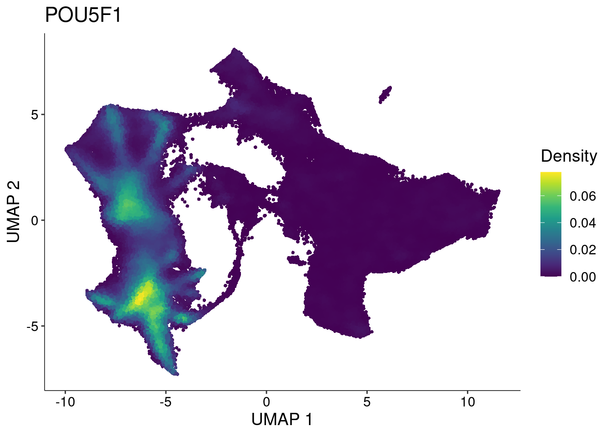
plot_density(sc, "MIXL1") # mesoderm marker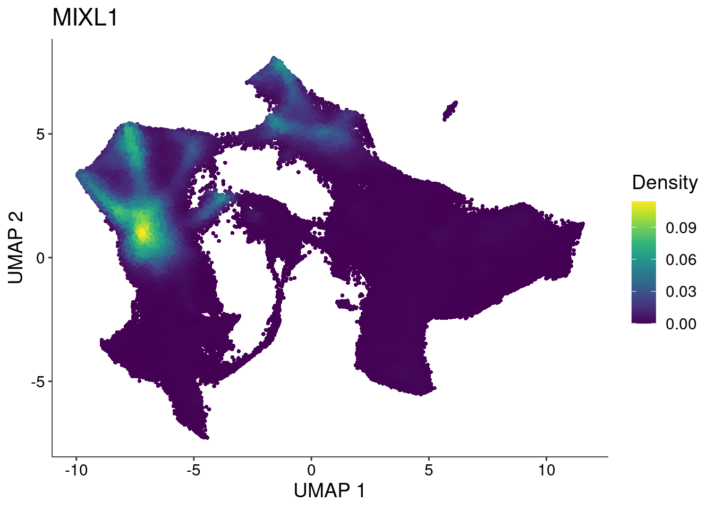
plot_density(sc, "MESP1") # cardiac mesoderm marker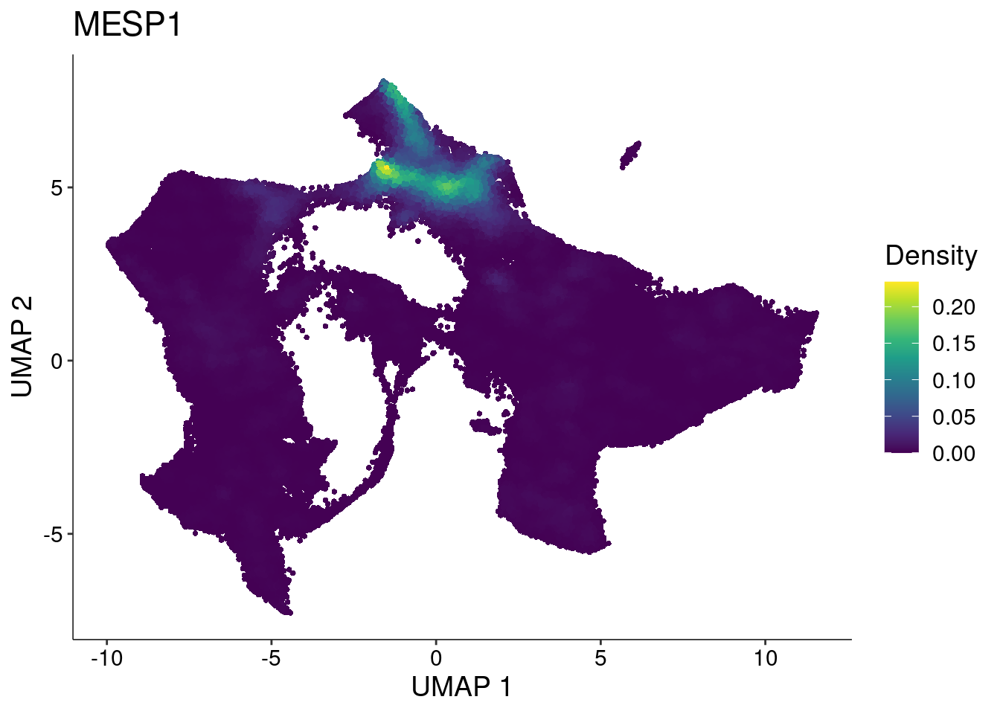
plot_density(sc, "NKX2-5") # cardiac progenitor marker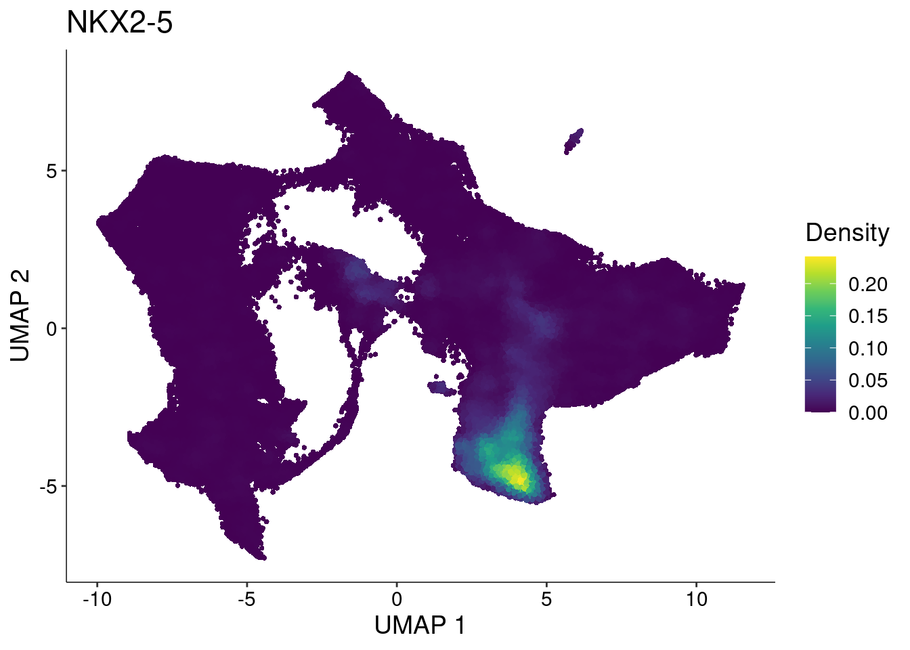
plot_density(sc, "MYL4") # CM marker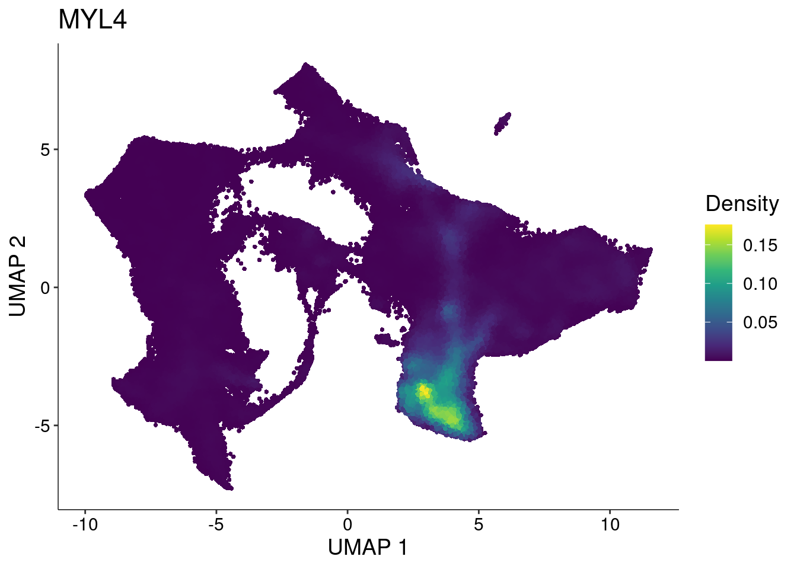
plot_density(sc, "DDR2") # EPDC marker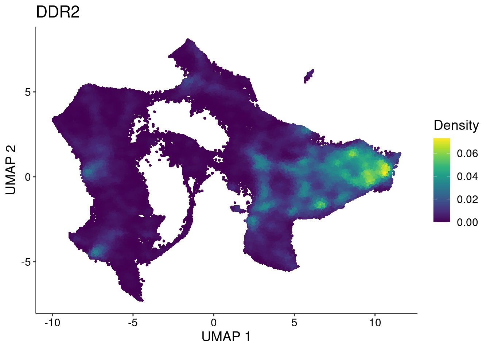
DimPlot(sc, group.by="leiden")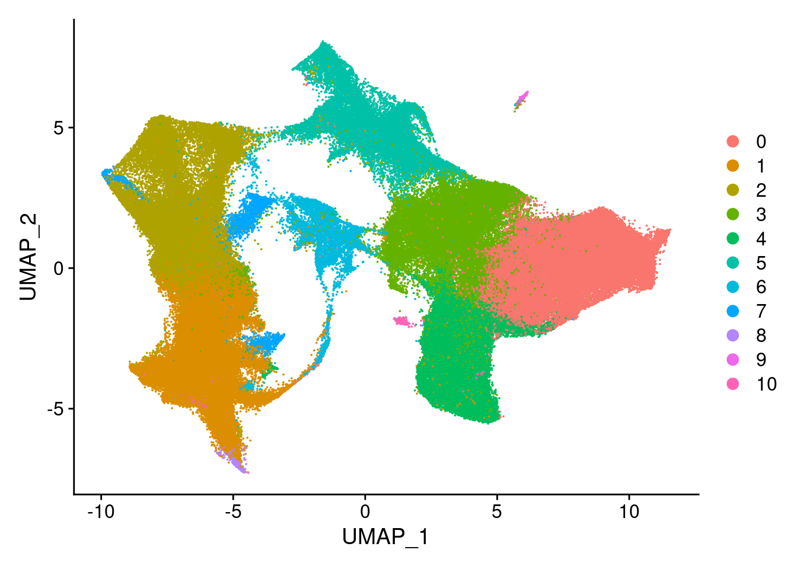
table(sc$leiden)
0 1 2 3 4 5 6 7 8 9 10
53125 47829 44573 33876 24586 20383 9180 3917 782 614 500 We subset to those leiden clusters with at least 5000 cells
sc <- sc[,sc$leiden %in% c(0, 1, 2, 3, 4, 5, 6)]
DimPlot(sc, group.by="leiden")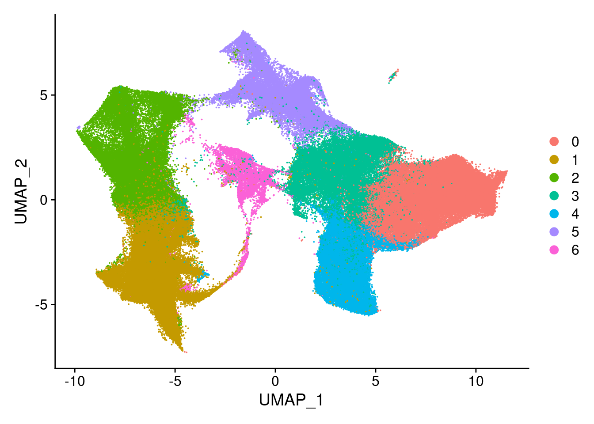
Next, we’d like to measure cell type proportions in our samples. Let’s look at how proportions of cardiomyocyte cells for each individual change over our collection time course. Note that in this plot, we are averaging over biological replicates
altpaths <- tibble("sample"=sc$sample, "cm"=(sc$leiden==4), "epdc"=(sc$leiden==0), "diffday"=sc$diffday, "individual"=sc$individual)
counts <- tibble("sample"=names(table(altpaths$sample)), "cells"=as.numeric(table(altpaths$sample)))
sample2diffday <- unique(select(altpaths, c(sample, diffday, individual)))
proportions <- altpaths %>% group_by(sample) %>%
summarize(cm.counts=sum(cm), epdc.counts=sum(epdc))`summarise()` ungrouping output (override with `.groups` argument)proportions <- proportions %>% inner_join(counts, by="sample") %>%
mutate(cm.frac=cm.counts/cells) %>%
mutate(epdc.frac=epdc.counts/cells) %>%
inner_join(sample2diffday, by="sample") %>%
mutate(diffday=as.numeric(str_sub(diffday, 5))) %>%
gather(`cm.frac`, `epdc.frac`, key="cell.type", value="proportion")
ggplot(proportions, aes(x=diffday, y=proportion, color=individual)) +
geom_line() +
facet_grid(cols=vars(cell.type))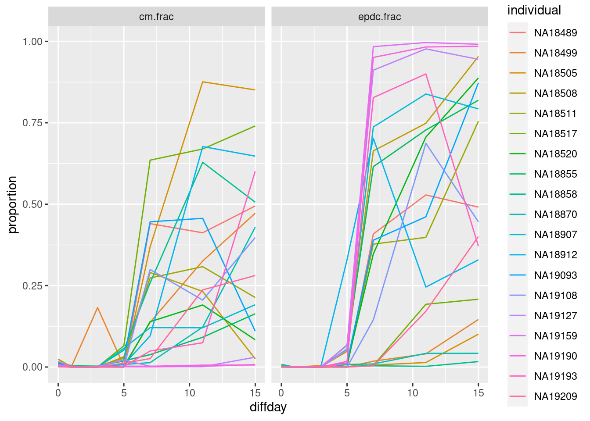
Next question, do cells from the same cell line seem to share a consistent rate of differentiation?
pseudotimes <- tibble("sample"=sc$sample, "cm"=sc$CM_PC1, "epdc"=sc$EPDC_PC1, "diffday"=sc$diffday, "individual"=sc$individual)
sample2diffday <- unique(select(pseudotimes, c(sample, diffday, individual)))
proportions <-pseudotimes %>% group_by(sample) %>%
summarize(cm.mean=mean(cm, na.rm=T), cm.sd=sd(cm, na.rm=T), epdc.mean=mean(epdc, na.rm=T), epdc.sd=sd(epdc, na.rm=T))`summarise()` ungrouping output (override with `.groups` argument)proportions <- proportions %>%
inner_join(sample2diffday, by="sample") %>%
mutate(diffday=as.numeric(str_sub(diffday, 5))) %>%
gather(`cm.mean`, `cm.sd`, `epdc.mean`, `epdc.sd`, key="quantity", value="value") %>%
mutate(type=str_extract(quantity, "[^.]+"), quantity=str_extract(quantity, "[^.]+$")) %>%
spread(quantity, value)
ggplot(proportions, aes(x=diffday, color=individual)) +
geom_line(aes(y=mean)) +
facet_grid(cols=vars(type)) +
ylab("Average Pseudotime") +
xlab("Collection Day")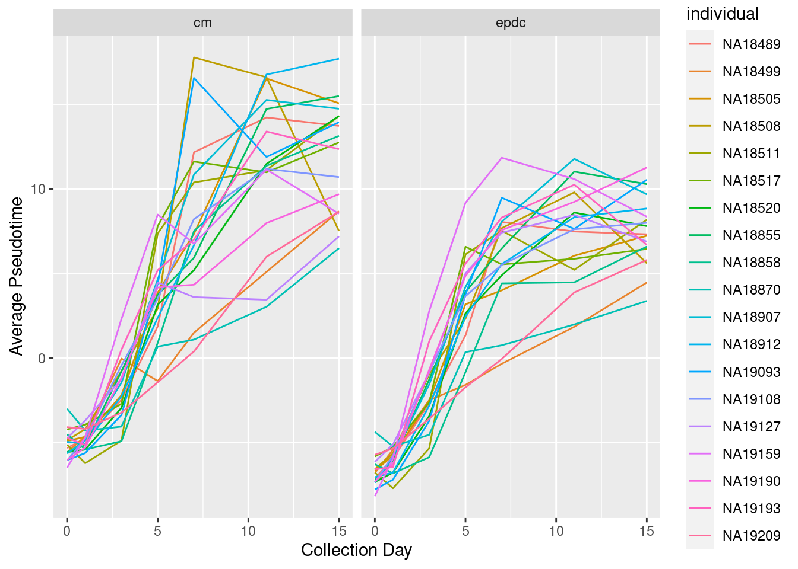
ggplot(proportions, aes(x=diffday, color=individual)) +
geom_line(aes(y=mean)) +
geom_errorbar(aes(ymin=mean-sd, ymax=mean+sd)) +
facet_grid(cols=vars(type)) +
ylab("Average Pseudotime") +
xlab("Collection Day")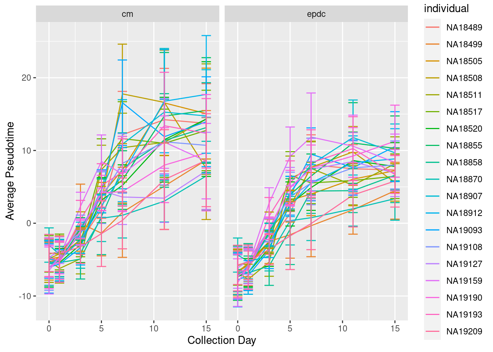
sessionInfo()R version 4.0.0 (2020-04-24)
Platform: x86_64-pc-linux-gnu (64-bit)
Running under: Scientific Linux 7.4 (Nitrogen)
Matrix products: default
BLAS/LAPACK: /software/openblas-0.2.19-el7-x86_64/lib/libopenblas_haswellp-r0.2.19.so
locale:
[1] LC_CTYPE=en_US.UTF-8 LC_NUMERIC=C
[3] LC_TIME=en_US.UTF-8 LC_COLLATE=en_US.UTF-8
[5] LC_MONETARY=en_US.UTF-8 LC_MESSAGES=en_US.UTF-8
[7] LC_PAPER=en_US.UTF-8 LC_NAME=C
[9] LC_ADDRESS=C LC_TELEPHONE=C
[11] LC_MEASUREMENT=en_US.UTF-8 LC_IDENTIFICATION=C
attached base packages:
[1] stats graphics grDevices utils datasets methods base
other attached packages:
[1] forcats_0.5.0 stringr_1.4.0 dplyr_1.0.2 purrr_0.3.4
[5] readr_1.3.1 tidyr_1.1.2 tibble_3.0.3 tidyverse_1.3.0
[9] Nebulosa_0.99.92 patchwork_1.0.1 ggplot2_3.3.2 Seurat_3.2.2
[13] workflowr_1.6.2
loaded via a namespace (and not attached):
[1] readxl_1.3.1 backports_1.1.10
[3] plyr_1.8.6 igraph_1.2.5
[5] lazyeval_0.2.2 splines_4.0.0
[7] listenv_0.8.0 GenomeInfoDb_1.25.11
[9] digest_0.6.25 htmltools_0.5.0
[11] viridis_0.5.1 fansi_0.4.1
[13] magrittr_1.5 tensor_1.5
[15] cluster_2.1.0 ks_1.11.7
[17] ROCR_1.0-11 globals_0.13.0
[19] modelr_0.1.8 matrixStats_0.57.0
[21] colorspace_1.4-1 rvest_0.3.6
[23] blob_1.2.1 rappdirs_0.3.1
[25] ggrepel_0.8.2 haven_2.3.1
[27] xfun_0.18 crayon_1.3.4
[29] RCurl_1.98-1.2 jsonlite_1.7.1
[31] spatstat_1.64-1 spatstat.data_1.4-3
[33] survival_3.1-12 zoo_1.8-8
[35] glue_1.4.2 polyclip_1.10-0
[37] gtable_0.3.0 zlibbioc_1.35.0
[39] XVector_0.29.3 leiden_0.3.3
[41] DelayedArray_0.15.12 future.apply_1.6.0
[43] SingleCellExperiment_1.11.7 BiocGenerics_0.35.4
[45] abind_1.4-5 scales_1.1.1
[47] mvtnorm_1.1-1 DBI_1.1.0
[49] miniUI_0.1.1.1 Rcpp_1.0.5
[51] viridisLite_0.3.0 xtable_1.8-4
[53] reticulate_1.16 rsvd_1.0.3
[55] mclust_5.4.6 stats4_4.0.0
[57] htmlwidgets_1.5.1 httr_1.4.2
[59] RColorBrewer_1.1-2 ellipsis_0.3.1
[61] ica_1.0-2 farver_2.0.3
[63] pkgconfig_2.0.3 uwot_0.1.8
[65] dbplyr_1.4.4 deldir_0.1-29
[67] labeling_0.3 tidyselect_1.1.0
[69] rlang_0.4.7 reshape2_1.4.4
[71] later_1.1.0.1 cellranger_1.1.0
[73] munsell_0.5.0 tools_4.0.0
[75] cli_2.0.2 generics_0.0.2
[77] broom_0.7.0 ggridges_0.5.2
[79] evaluate_0.14 fastmap_1.0.1
[81] yaml_2.2.1 goftest_1.2-2
[83] knitr_1.30 fs_1.5.0
[85] fitdistrplus_1.1-1 RANN_2.6.1
[87] pbapply_1.4-3 future_1.19.1
[89] nlme_3.1-147 whisker_0.4
[91] mime_0.9 xml2_1.3.2
[93] compiler_4.0.0 rstudioapi_0.11
[95] plotly_4.9.2.1 png_0.1-7
[97] spatstat.utils_1.17-0 reprex_0.3.0
[99] stringi_1.5.3 lattice_0.20-41
[101] Matrix_1.2-18 vctrs_0.3.4
[103] pillar_1.4.6 lifecycle_0.2.0
[105] lmtest_0.9-38 RcppAnnoy_0.0.16
[107] data.table_1.13.0 cowplot_1.1.0
[109] bitops_1.0-6 irlba_2.3.3
[111] httpuv_1.5.4 GenomicRanges_1.41.6
[113] R6_2.4.1 promises_1.1.1
[115] KernSmooth_2.23-16 gridExtra_2.3
[117] IRanges_2.23.10 codetools_0.2-16
[119] MASS_7.3-51.5 assertthat_0.2.1
[121] SummarizedExperiment_1.19.8 rprojroot_1.3-2
[123] withr_2.3.0 sctransform_0.3
[125] S4Vectors_0.27.13 GenomeInfoDbData_1.2.3
[127] mgcv_1.8-31 parallel_4.0.0
[129] hms_0.5.3 grid_4.0.0
[131] rpart_4.1-15 rmarkdown_2.4
[133] MatrixGenerics_1.1.3 Rtsne_0.15
[135] git2r_0.27.1 lubridate_1.7.9
[137] Biobase_2.49.1 shiny_1.5.0